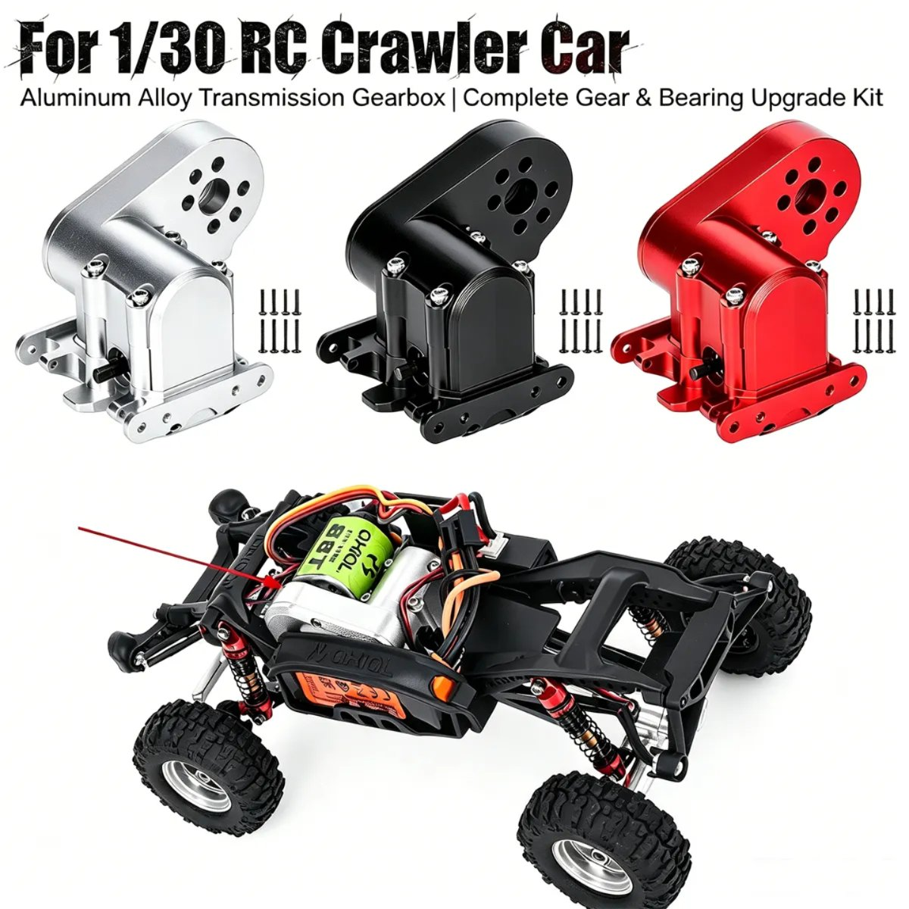

Cause Usually the gear mesh is too tight or too loose, or the slipper clutch is locked fully.
Quick fix
- Check the pinion and spur for missing or melted teeth, and replace damaged gears.
- Reset the mesh with the paper-strip test: light tooth marks, no tearing.
- Back the slipper clutch off about half a turn from fully tight.
- Never mix gear pitches (32P, 48P, Mod 0.8), even if they look the same.
Parts that help
 Rlaarlo 1/7 15T Pinion₹1,399
Rlaarlo 1/7 15T Pinion₹1,399
1/30 Aluminum Transmission Gearbox Assembly for Axial SCX30₹2,499 14T 32P Pinion Gear (5mm)₹580
14T 32P Pinion Gear (5mm)₹580